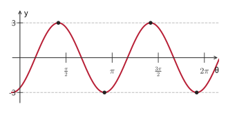

ホーム ＞ 数学II ＞ 一般角と三角関数のグラフ
別冊章末問題の解答
1. (1) \(75^\circ\) を弧度で表せ。(2) \(\dfrac{4 \pi}{9}\) を度数で表せ。(3) 半径 \(12\)、中心角 \(\dfrac{5 \pi}{8}\) の扇形の弧の長さ \(l\) と面積 \(S\) を求めよ。
(1) 度数→弧度（\(180^\circ=\pi\)）
\[75^\circ=75\times\dfrac{\pi}{180}=\dfrac{5 \pi}{12}\](2) 弧度→度数
\[\dfrac{4 \pi}{9}=\dfrac{4}{9}\times\dfrac{180^\circ}{\pi}=80^\circ\](3) 扇形の弧の長さ
半径 \(r\)、中心角 \(\theta\)（ラジアン）の扇形：
\[l=r\theta,\qquad S=\dfrac12r^2\theta=\dfrac12rl\]\[l=12\times\dfrac{5 \pi}{8}=\dfrac{15 \pi}{2}\](3) 扇形の面積
\[S=\dfrac12\times12^2\times\dfrac{5 \pi}{8}=45 \pi\]（例題1の型）
【答案】
\[\text{(1) }\dfrac{5 \pi}{12}\quad \text{(2) }80^\circ\quad \text{(3) }l=\dfrac{15 \pi}{2},\ S=45 \pi\]答
2. 次の値を求めよ。 \[\cos\,\dfrac{11 \pi}{4},\qquad \tan\,\dfrac{5 \pi}{6},\qquad \sin\,- \dfrac{4 \pi}{3}\]
\(\cos\,\dfrac{11 \pi}{4}\) の値
\(\cos \dfrac{11 \pi}{4}\)：\(\dfrac{11 \pi}{4}=\dfrac{3 \pi}{4}+1\cdot2\pi\)（周期 \(2\pi\) で \(0\leqq\theta<2\pi\) に直す）。角 \(\dfrac{3 \pi}{4}\) は第2象限、基準角 \(\dfrac{\pi}{4}\)。第2象限で \(\cos\) は負。
\[\cos \dfrac{11 \pi}{4}=-\cos \dfrac{\pi}{4}=- \dfrac{\sqrt{2}}{2}\]\(\tan\,\dfrac{5 \pi}{6}\) の値
\(\tan \dfrac{5 \pi}{6}\)：角 \(\dfrac{5 \pi}{6}\) は第2象限、基準角 \(\dfrac{\pi}{6}\)。第2象限で \(\tan\) は負。
\[\tan \dfrac{5 \pi}{6}=-\tan \dfrac{\pi}{6}=- \dfrac{\sqrt{3}}{3}\]\(\sin\,- \dfrac{4 \pi}{3}\) の値
\(\sin - \dfrac{4 \pi}{3}\)：\(- \dfrac{4 \pi}{3}=\dfrac{2 \pi}{3}-1\cdot2\pi\)（周期 \(2\pi\) で \(0\leqq\theta<2\pi\) に直す）。角 \(\dfrac{2 \pi}{3}\) は第2象限、基準角 \(\dfrac{\pi}{3}\)。第2象限で \(\sin\) は正。
\[\sin - \dfrac{4 \pi}{3}=\sin \dfrac{\pi}{3}=\dfrac{\sqrt{3}}{2}\]（例題2の型）
【答案】
\[\cos\,\dfrac{11 \pi}{4}=- \dfrac{\sqrt{2}}{2}\quad \tan\,\dfrac{5 \pi}{6}=- \dfrac{\sqrt{3}}{3}\quad \sin\,- \dfrac{4 \pi}{3}=\dfrac{\sqrt{3}}{2}\]答
3. \(\theta\) は第3象限 の角で \(\sin\theta=- \dfrac{12}{13}\) である。\(\cos\theta\)、\(\tan\theta\) の値を求めよ。
\(\cos\theta\) を求める
\(\sin^2\theta+\cos^2\theta=1\) より
\[\cos^2\theta=1-\left(- \dfrac{12}{13}\right)^2=\dfrac{25}{169}\]\(\theta\) は第3象限なので \(\cos\theta\)は負。
\[\cos\theta=- \dfrac{5}{13}\]\(\tan\theta\) を求める
\[\tan\theta=\dfrac{\sin\theta}{\cos\theta}=- \dfrac{12}{13}\div\left(- \dfrac{5}{13}\right)=\dfrac{12}{5}\]（例題3の型）
【答案】
\[\cos\theta=- \dfrac{5}{13},\quad \tan\theta=\dfrac{12}{5}\]答
4. 関数 \(y=3\sin\left(2\theta-\dfrac{\pi}{3}\right)\)（\(0\leqq\theta<2\pi\)）の周期、最大値・最小値と、そのときの \(\theta\) の値を求め、グラフをかけ。
周期・振幅・平行移動を読む
\(y=3\sin\left(2\theta-\dfrac{\pi}{3}\right)=3\sin 2\left(\theta-\dfrac{\pi}{6}\right)\)。
\[\text{周期}=\dfrac{2\pi}{2}=\pi,\quad \text{振幅}=3,\quad \text{右へ }\dfrac{\pi}{6}\text{ だけ平行移動}\]最大値・最小値
\(-1\leqq\sin(\cdots)\leqq1\) だから
\[\text{最大値 }3,\qquad \text{最小値 }-3\]最大・最小になる \(\theta\)（\(0\leqq\theta<2\pi\)）
最大：\(2\theta-\dfrac{\pi}{3}=\dfrac{\pi}{2}+2k\pi\) より
\[\theta=\dfrac{5 \pi}{12},\ \dfrac{17 \pi}{12}\]最小：\(2\theta-\dfrac{\pi}{3}=-\dfrac{\pi}{2}+2k\pi\) より
\[\theta=\dfrac{11 \pi}{12},\ \dfrac{23 \pi}{12}\]グラフ
赤い曲線がグラフ（点は最大・最小）。

（例題4の型）
【答案】
\[\text{周期 }\pi,\ \text{最大値 }3\ (\theta=\dfrac{5 \pi}{12},\ \dfrac{17 \pi}{12}),\ \text{最小値 }-3\ (\theta=\dfrac{11 \pi}{12},\ \dfrac{23 \pi}{12})\]答
5. 周の長さが \(28\) の扇形のうち、面積が最大になるものについて、そのときの半径、中心角（ラジアン）、面積の最大値を求めよ。
弧の長さ \(l\) を半径 \(r\) で表す
周の長さは \(2r+l=28\)、したがって
\[l=28-2r\quad(0<r<14)\]面積を \(r\) の式にする
\[S=\dfrac12rl=\dfrac12r(28-2r)=-r^2+14r\]平方完成する
\[S=-\left(r-7\right)^2+49\]最大値と中心角
\(r=7\)（\(0<r<14\) を満たす）のとき最大。このとき \(l=28-2\cdot7=14\)、
\[\theta=\dfrac lr=\dfrac{14}{7}=2\ \text{(ラジアン)}\]（例題5の型）
【答案】
\[\text{半径 }7,\ \text{中心角 }2\ \text{ラジアン},\ \text{面積の最大値 }49\]答